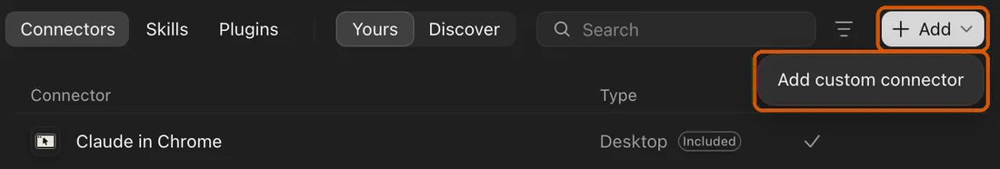
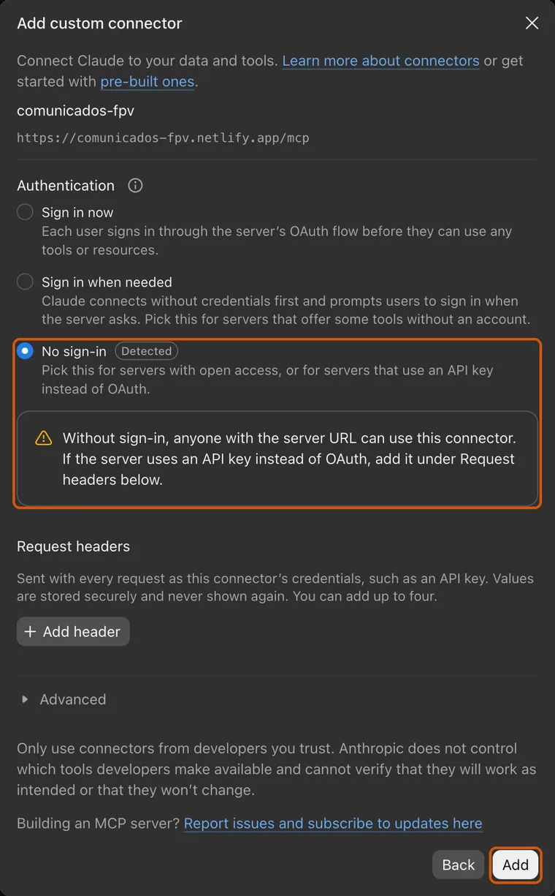

Avisa a Interior de tus vuelos de dron, hablando con Claude
Le dices dónde y cuándo vas a volar. Claude rellena por ti la comunicación en la web del Ministerio del Interior. Tú solo la revisas y la firmas.
Así de fácil
Se lo dices con tus palabras
El sitio y el día. Si no dices la hora o el dron, usa lo de siempre.
Lo rellena en tu Chrome
Comprueba que se puede volar allí, dibuja la zona en el mapa y rellena el formulario. Puedes verlo mientras lo hace.
Revisas y firmas
Dices «firma» y aceptas con tu certificado digital. Claude nunca firma por ti.
Lo que necesitas
- Un ordenador (Mac o Windows) con Google ChromeEl móvil no sirve para esto, porque la firma se hace en el ordenador.
- Una cuenta de Claude de pago (plan Pro)Te la haces en claude.ai. Es lo único que cuesta dinero; esta web es gratis.
- Tu certificado digital y AutoFirmaLo mismo que usas para Hacienda o la DGT. Si no lo tienes: el certificado se pide en la FNMT y AutoFirma se descarga aquí.
- Estar registrado en AESAComo operador de drones y con el certificado de piloto (A1/A3). La primera vez Claude te pedirá los dos números o los PDF, que se descargan en la sede de AESA.
Prepáralo una sola vez: 2 pasos
Son 5 minutos. No tienes que rellenar ningún formulario ni subir nada: tus datos ya están en tu cuenta de Interior, y lo que falte te lo pregunta Claude la primera vez.
-
Añade Claude a tu Chrome
Entra en la tienda de Chrome, busca Claude (de Anthropic) y pulsa Añadir a Chrome. Luego pulsa su icono y entra con tu cuenta de Claude.
-
Conecta Claude con esta web
En la app de Claude abre Configuración → Personalizar → Conectores, pulsa + Añadir y elige Añadir conector personalizado.

En inglés: Settings → Customize → Connectors → + Add → Add custom connector. De nombre pon Comunicados FPV y pega esta dirección:
Deja marcada la opción sin inicio de sesión y pulsa Añadir y luego Conectar. El aviso amarillo es normal: esta web no tiene datos de nadie.

Así queda antes de pulsar «Añadir».
Y ya está. Si te pierdes en algún menú, pregúntale a Claude: «¿cómo añado un conector personalizado?».
Cómo se usa
Antes de nada (opcional, recomendado): «configúrame»
Abre Chrome y la app de Claude, y escribe «configúrame». Claude te preguntará cómo quieres empezar:
Ya he hecho alguna comunicación
Claude entra en la web de Interior, mira tu última comunicación y te enseña los datos que usará: tus números de AESA, tu teléfono, tus drones y tu observador. Si falta algo (por ejemplo el teléfono), te lo pide una vez.
Es la primera vez
Te pregunta tu teléfono, qué dron vuelas y tus dos números de AESA (o arrastras al chat tus PDF de AESA). Tu nombre, DNI y dirección los saca la web de Interior de tu certificado.
En los dos casos entra en la web de Interior con tu certificado. Así sabes que todo funciona antes del día que quieras volar.
Cada vez que vayas a volar
- Con al menos 5 días de antelación (lo exige Interior), abre Chrome y la app de Claude.
- Escríbele como a una persona: «quiero volar el sábado 14 en la playa del Cristo, Estepona, de 9 a 13». Si no dices hora, pone el día entero; si no dices dron, usa los de tu última comunicación.
- La primera vez te pedirá permiso para usar Comunicados FPV: pulsa Permitir siempre.
- Verás que en Chrome aparece un grupo de pestañas de color: ahí trabaja Claude. Haz clic en él para verlo rellenar.
- Al entrar en Interior puede salir una ventana para elegir tu certificado: elige el tuyo (nunca «Cancelar»).
- Claude comprueba el mapa de ENAIRE, copia tu última comunicación (o la crea si es la primera) y te enseña un resumen con el mapa.
- Si está bien, di «firma» y acepta en AutoFirma. Si no, dile qué cambiar: «mejor de 10 a 12», «solo con el Pavo».
- Al terminar te da el número de comunicación y el justificante queda en tu carpeta Descargas.
Truco: pon Claude en una mitad de la pantalla y Chrome en la otra, y verás cómo rellena cada casilla.
Si algo no va
- Claude no hace nada en tu Chrome: comprueba que Chrome está abierto y que la extensión de Claude tiene la sesión iniciada. Si usas Claude en varios ordenadores, dile «usa el Chrome de este ordenador».
- Claude no usa Comunicados FPV: en el menú de herramientas del chat (junto al cuadro de texto), comprueba que «Comunicados FPV» y «Claude in Chrome» están activados.
- «No ha seleccionado ningún certificado» o un error de Cl@ve: cierra Chrome del todo (en Mac, Cmd+Q; en Windows, todas las ventanas), ábrelo y pídele que lo intente otra vez.
- Te dice que la zona tiene restricciones: ese sitio necesita otro permiso (aeropuerto, zona militar, parque nacional o zona de fotos restringidas). Elige otro sitio.
- Te dice que no llegas al plazo: la comunicación tiene que hacerse al menos 5 días antes del vuelo.
Preguntas frecuentes
¿Cuánto cuesta?
Esta web es gratis. Solo necesitas tu cuenta de Claude de pago, que puedes usar también para cualquier otra cosa.
¿Claude puede presentar algo sin que yo lo sepa?
No. Siempre te enseña un resumen y espera a que digas «firma». Además, la firma la haces tú con tu certificado digital: sin ti no se puede presentar nada.
¿Dónde quedan mis datos?
Donde ya estaban: en tu cuenta de la sede de Interior (tus comunicaciones anteriores) y en tus conversaciones con Claude. Esta web no guarda nada tuyo: no tiene registro ni contraseñas.
¿Y si quiero volar en una zona con restricciones?
Antes de nada, Claude mira el mapa oficial de ENAIRE. Si el sitio está cerca de un aeropuerto, en una zona militar, en un parque nacional o en una zona donde se necesita permiso para hacer fotos (como Marbella), te avisa y no sigue, porque hace falta otro trámite.
¿Sirve para cualquier dron?
Para drones de menos de 250 gramos, sí. Los drones caseros de 250 gramos o más no pueden volar en zonas urbanas, así que Claude no los incluye.
¿Y si la Guardia Civil me pide papeles?
A veces escriben pidiendo tu registro de operador, tu certificado de piloto y el justificante de la comunicación. Pídele a Claude que te prepare la respuesta.